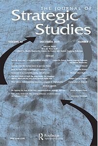
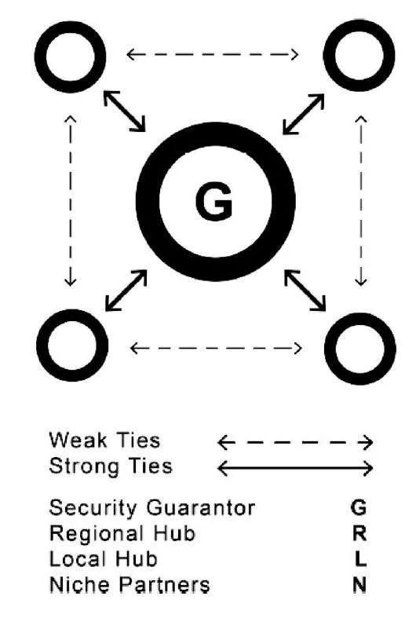
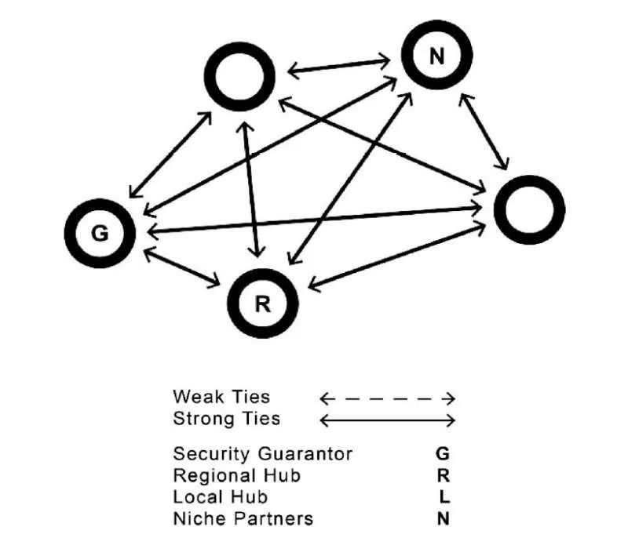
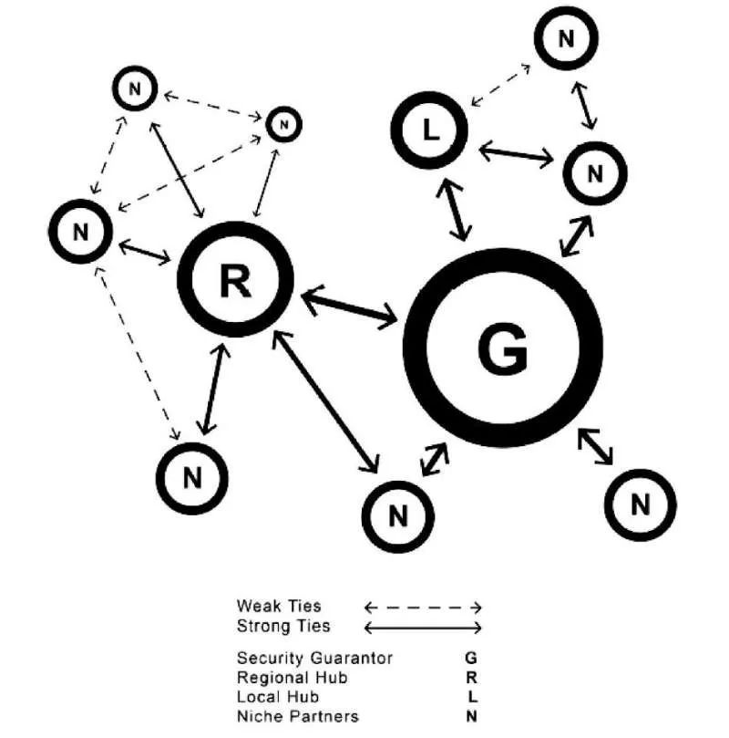

收录于合集

作品简介
【作者】 路易斯•西蒙(Luis Simón)，布鲁塞尔自由大学(Vrije Universiteit Brussel)欧洲研究学院教授；波罗的海国防大学(Baltic Defense College)副研究员；亚历山大•兰诺什卡(Alexander Lanoszka)，滑铁卢大学(University of Waterloo)国际关系学助理教授；雨果•梅耶(Hugo Meijer)，巴黎国际科学研究中心(Centre for International Studies of Sciences Po, Paris) 研究员。
【 编译】 虞敷扬 （国政学人编译员，乔治·华盛顿大学 艾略特国际关系学院）
【校对】 丁伟航
【审读 】 李雯珲
【排版】 高佳美
【 来源 】 Simón, Luis et al. “Nodal Defence: The Changing Structure of U.S. Alliance Systems in Europe and East Asia”. Journal of Strategic Studies , 2019, pp. 1-29. Informa UK Limited, doi:10.1080/01402390.2019.1636372.
期刊介绍

《战略研究杂志》(Journal of Strategic Studies)是一份涵盖军事和外交战略研究的学术期刊。它成立于1978年，现任主编是乔·马诺洛(伦敦国王学院)和托马斯·G·马肯(约翰·霍普金斯大学) 。主要研究领域涵盖人类如何面对实现政治目标的挑战、当代安全和持久争议、将历史和理论方法结合研究现代战争、以及国防政策和现代战略研究。2018年期刊影响因子达1.482。
内容提要
学者们习惯于将美国在欧洲及东亚地区主导的联盟区分为两个迥然不同的体系：北大西洋公约组织是多边主义的代表，而美国在东亚建立的双边联盟关系则是典型的“辐射状”结构(Hub-
and-spokes)。美国在东亚的盟友都与美国保持亲密的双边战略关系，但是相互间缺乏联系。
作者认为以上对美国主导的联盟体系的描述已经过时，并提出“节点防御”(Nodal
Defense)，作为一个融合了双边(Bilateral)，小边(Minilateral)以及多边(Multilateral)协作方式，更好地总结了当前美国在欧洲和亚太地区主导的联盟体系。
具体而言， 节点防御将各盟友通过动态防卫合作有机结合起来，根据不同盟友的功能角色来应对不同威胁。
美国大战略的根基就是联盟。冷战结束以来，不断变化的地区威胁改变了盟国和伙伴之间的战略重点和防务合作模式，从而改变了美国主导的联盟结构。在整个冷战期间，北约的多边结构都是为了保护欧洲免受苏联的全面威胁。在苏联解体后，由于美国及其欧洲盟国面临的区域威胁变得更加多样化，他们将资源向中东地区倾斜用以打击恐怖主义与维稳。20世纪后期，中东地区安全问题与复兴的俄罗斯共同威胁着美国及其欧洲盟友。区域联盟体系从此失去了其最初的目标，并经历了更大的分裂。北约成员国逐渐关注于局部安全挑战和他们自身利益相关的问题，从而分化成双边或小边的集团来应对具体威胁。东欧和东北欧国家针对俄罗斯的常规威胁协同制定国防政策。西欧和南欧国家的国防政策则在很大程度上围绕着地区不稳定或恐怖主义等挑战。虽然北约仍然存在并为欧洲安全提供了一定的凝聚性，但是基于双边与小边规模开展的防务合作在面对局部安全问题时提供了更强的组织性。在东亚地区则呈现出了另一种截然不同的趋势。冷战期间，美国主导的“辐射状”联盟体系使得美国与其盟友能够同时应对多个安全挑战：对抗苏联在亚洲的影响力、阻遏北朝鲜向南进攻、提防重新崛起的日本和阻止中国大陆攻台。冷战后，崛起的中国逐渐成为地区安全的“威胁”并促成了美国与盟友间更紧密的交流与合作。许多美国盟友虽然仍围绕朝鲜核计划等更局部的威胁来制定国防政策，甚至对公开组建一个旨在反击中国力量的地区联盟持保留态度。但总体来说，因为中国的崛起与更加激进的政策打破了区域均势格局，使得美国盟友间的互动更加频繁。
作者认为，由于区域威胁环境的变化，美国主导的欧洲和东亚区域联盟体系正在向所谓的“节点防御”体系过渡。
多边、辐射状与节点防御体系的区别在于如何利用同盟国的职能专业化(Functional Specialization)来对抗特定威胁。
在理想的多边体系中，所有盟国都同意优先处理联盟面临的主要威胁，并围绕这一威胁进行职能区分。在理想的辐射状联盟中，盟国以应对不同的安全威胁目标来分配职能。从整个联盟体系层面来看，盟国对于哪一种威胁值得优先考虑存在分歧，因此，每一个双边联盟都围绕着不同的威胁。节点防御两者的混合，一些区域合作伙伴在认定重要威胁目标上达成一致。为了应对不同的威胁，盟国间通过各种配置（即双边，小边和多边）遵照特定的职能角色进行务实的组织。
文章导读
一、 联盟体系中的职能角色 ****
联盟体系中的成员职能可区分为： 安全保证国(Security Guarantor)、地区中枢(Regional Hub)、局部中枢(Local Hub)和“利基”专家(Niche Specialists)。 [Niche,“利基”被引申为用以研究中小企业如何开拓市场的“利基战略”等理论概念，在国际关系理论中被发展为“利基外交”，一般被借以研究冷战后中小国家的外交特征。]这些职能在经过组合后可以用来应对一个或者多个威胁。一个安全保证国需要对其盟友提供战略支撑。它需要为所有盟国提供更广泛的威慑承诺，并在联盟体系遇到威胁时发挥关键作用。区域中枢在联盟系统中发挥领导或共同领导作用，以便有效地应对所有或大多数威胁和相关任务。虽然它们不能向其他国家提供安全保证，但可以支持安全保证国在不同战区的军事行动，从而分担国防负担和为行动合法性背书。他们还可以利用自己的地区影响力促进不同盟国之间的联系，从而在盟国的军事战略或能力发展中发挥协调作用。其他盟国可能缺乏应对所有威胁的能力与意愿，或在不同的战区进行有意义的行动。由于这些盟国的地理位置，使它们可以在当地为安全保证国提供跨职能领域(例如导弹防御、空中和地面战斗) 军事行动的关键支持。这样的盟友被称为局部中枢。与区域中枢相比，局部中枢只在应对单一威胁和次区域(Sub- region)背景下发挥作用，但在应对其他威胁或解决其特定次区域以外的威胁时发挥的作用微乎其微。”利基专家”则提供针对性强、功能更强的贡献，以应对一个或多个威胁。它们有助于加强对地区对手的威慑，保卫当地的航道和贸易路线，或为联盟的日常行动提供关键基础设施。
二、 辐射状联盟体系 ****
冷战时期美国在东亚建立起的联盟体系就是如此。美国作为一个区域内最强大的国家与韩国、日本、台湾地区、菲律宾和泰国分别签署防卫协定。在没有一个共同的地区威胁的情况下，这些东亚国家无法克服彼此的历史恩怨，甚至无法维持稳定安全关系。这些盟友所面对的威胁也不尽相同，有苏联、中国和北朝鲜，而他们的共性则是都与美国保持盟友关系。联盟体系中各盟国对区域威胁的优先级界定上有分歧，每一个双边联盟应对不同的敌人。因此在可能的区域突发冲突中，联盟体系的不同盟国之间没有协同合作的计划。比如，在可能的台海冲突中，只有美国会参与，而日韩并不会直接介入。同样的，在美韩同盟关系之外，也不会有别的美国盟友会参与美韩协作共同抵御北朝鲜的攻势。图1

三、 多边联盟体系 ****
与辐射状联盟体系不同的是， 多边联盟中有三个或更多的条约同盟，包括旨在促进每一个条约同盟之间合作的制度化的结构，因此没有任何一个盟国与另一个盟国完全隔绝。 在理想的情况下，每一个盟国之间都有国防协同政策（参见图2）。多边体系的核心特征是：所有成员国都优先考虑各自面临的单一威胁，因此，职能的分化围绕着同一威胁。对一个主要威胁的共同关注，使多边体系与辐射状和节点防御体系中看到的职能分化有所不同。在多边体系中，一些盟国有能力(和意愿)在几个职能(如核和常规)和地缘政治领域发挥威慑作用。而其它盟国可能专注于某些次区域或任务，如反潜、海上封锁、空战和陆战。在多边体系中的盟国在联盟体系所面临的威胁优先级认定上是趋同的，在功能上有相应的区别。因此其职能专业化则围绕着一个共同的、全局性的威胁。图2美国冷战初期在欧洲建立的以美国为首的北大西洋公约组织(NATO)，通常被描述为典

型的多边安全联盟。这个多边联盟是对苏联威胁的直接回应。北约的“政府间”(Inter-governmental )特征，以及所有成员国都拥有否决权的事实，确立了该联盟的正式多边性质(Formal multilateral character)。《华盛顿条约》的第五条保证了对任何成员的攻击将被视为对所有成员的攻击，因此鼓励所有成员协助被攻击方。在整个冷战期间，欧洲盟国之间的职能分工围绕着一个一致认同的、压倒一切的威胁——苏联而组织起来。英国作为北约威慑任务的区域中枢，在功能上通过其核威慑和其在陆地、海上和空中的常规军事力量发挥作用。鉴于英国在西德的存在、对“格陵兰- 冰岛-联合王国及北大西洋缺口”(GIUK Gap)的管控，以及在地中海和波罗的海的前沿部署，英国在地缘政治上也发挥着至关重要的作用。其他国家则把重点放在各自的次区域作为局部中枢，并在大多数战争领域(除了核战争)提供协助。土耳其在黑海和地中海东部也扮演了局部中枢的角色。其余国家则承担着前沿威胁应对的职责，例如丹麦和挪威担负着在波罗的海和北大西洋的反潜作战以及海域封锁任务。
四、 节点防御 ****
节点防御是多边主义与辐射状体系的结合（参见图3）。此同盟体系中的成员专精于特定职能，利用它们的相对优势来应对不同的威胁。节点防御作为一个多边同盟体系与辐射状同盟体系的复合体通过不同的重叠性双边、小边以及多边渠道达成盟国间的防务合作。上文描述的各个职能在节点防御联盟体系中发挥着更加重要的作用。安全保证国可以由一个大国担任，但是它需要将针对特定威胁的领导权分包给局部中枢。“利基专家”则主要依托局部中枢来完成次区域的安全管理。随着区域安全环境的变化，美国在欧洲与东亚地区主导的联盟体系则对职能分配进行重新洗牌。美国盟友与伙伴针对特定威胁逐渐增加双边、小边与多边协作。因此美国在欧洲与东亚地区主导的联盟体系正在向节点防御体系发展。图3

五、 欧洲地区的节点防御体系
冷战期间，北约成员国围绕着应对单一威胁分配职能。在苏联解体之后，北约成员国重塑各自的战略重心与合作模式以适应一个更加多元化的欧洲。如今，修正主义俄罗斯对波罗的海沿岸国家产生强烈威胁，但是它无力再如冷战时期一样产生系统性的威胁。南欧和西欧的盟友对俄罗斯的激进政策并无直接的顾虑，实际上中东与北非地区的恐怖主义与混乱局势才是这些国家更关心的威胁。同时存在的多种威胁与盟友间的分歧正在重塑美国在欧洲的联盟体系。在北约提供一定凝聚力的同时，成员国之间也开展了针对特定威胁环境开展的双边与小边协作。
安全保证国
美国仍旧是整个欧战安全体系的基石：无论是保持对俄罗斯的核威慑还是阻遏俄罗斯进行大规模常规战，亦或是在中东与北非地区的反恐行动都离不开美国超群的战略投送能力。美国不仅在波兰驻军，而且组织了许多联合演习、培训计划以及军事教育交流用以强化波罗的海及黑海地区的防卫能力。美国还在帮助欧洲盟友在北非中东地区打击恐怖主义行动中发挥关键作用。美国推翻了利比亚的卡扎菲；协同了在伊拉克、叙利亚和泛中东地区打击伊斯兰国的行动；与法国一道在撒哈拉地区打击极端组织。除此之外，美国还积极参与北约在阿富汗的国际安全援助部队(ISAF)。
地区中枢
英、法、德都是地区中枢，它们可以担任领导与共同领导的角色在大多数次战区(Sub- theatres)应对相关威胁。北约海上力量司令部、美国陆军和空军基地、美国情报与信号收集设施都在英国境内；而德国则是北约与美国在海外最大的驻在国，美军的战术核武器也部署在德国。英国和德国在北约指挥框架内享有特别地位。北约盟友在它们的组织下协同运作，并且它们各自指挥一个部署在欧州东北部的多国营(Multinational Battalion)，无疑强化了它们作为地区中枢的地位。法国虽然在北约威慑体系内不如英国德国，但是法国参与了德国指挥的驻立陶宛战斗群；在波罗的海与黑海区域部署战机与军舰用以支持北约的威慑行动；其核力量则进一步增强了欧洲的稳定。更重要的是，法国在南部欧洲发挥领导作用，在马里和中非共和国开展军事行动。法国在尼日尔的无人机基地负责监控大撒哈拉区域。奥巴马总统指出：法国是美国在非洲重要的伙伴。2010年的兰卡斯特宫协议(Lancaster House Treaty)加强了英法在非洲与中东地区的双边防务合作。除此之外，美英法的三边军事合作在利比亚与西利亚干预行动中得到了进一步的发展。
局部中枢
由于意大利和西班牙的面积、能力和地理位置，它们构成了美国主导的欧洲联盟体系中地中海地区的局部中枢。从华盛顿的角度来看，北非和中东正在发生的动乱突出了地中海的重要性。自2012年1月以来，位于维琴察 (Vicenza)的美国陆军基地被重新指定为美国非洲军 (USARAF)总部，而位于西西里岛西格内拉 (Sigonella)的美国海军基地已经成为美国在欧洲及其周围地区的主要情报、监视和侦察 (ISR)中心。美国海军第五舰队与盟军联合部队司令部都位于那不勒斯。位于西班牙南部的基地则为美国进入地中海提供了天然入口，并提升了美军在中东、东非和西非战区的机动性。此外，西班牙与美国在2015年签署一项协议，允许3500名美国海军陆战队士兵驻扎在莫隆(Morón)，从而使西班牙成为了美国在欧洲及周边地区的主要海军与两栖力量支柱。波兰和罗马尼亚分别是北约在东欧和东南欧方向威慑俄罗斯的局部中枢。一个安全的波兰有助于北约在波罗的海保持优势地位，并为波罗的海国家提供安全的海上交通线。随着波兰陆军组建第四个师，波兰军队成为了在可能的俄罗斯入侵东北欧时有力的快反力量。美国还将波兰视为东北部欧洲地区的战区制空与导弹防御的重要支撑。根据波兰还在小边框架下拓展与捷克、匈牙利和斯洛伐克的军事合作，并组建了维谢格拉德营(Visegrád Battlegroup battalion)。罗马尼亚位于黑海和巴尔干地区，在黑海盆地担任局部中枢的职能。美国正努力加强罗马尼亚的“空中监视能力”并对其空军进行现代化改造。与波兰一样，罗马尼亚境内也部署有陆基宙斯盾系统。此外，罗马尼亚将在境内设立一个多国部队总部，使其成为东南欧战区防空、导弹防御和地区指挥控制的局部中枢。
“利基专家”（Niche Specialists）
“利基专家” 为持有有限均势能力但是依旧在应对特定威胁时发挥重要作用的小国。 例如，波罗的海国家建设军队时避免获取冗余能力，而重点放在能够增加对俄罗斯威慑任务价值的能力和战术上。首先发展必要的实体和指挥控制基础设施以适应美国和北约部队。另一种方式则是大力发展非对称战争的能力。波罗的海国家面对俄罗斯时的最佳选择是加强游击战能力，来挑战俄军对领土的实际管控。波罗的海国家已经进行了这样的投资、组织准军事单位演习并向公民发放游击战的手册。波罗的海三国积极发展联军部队，现在已成立波罗的海营(BALTBAT)、波罗的海海军分队(BALTRON)、波罗的海空中监视网路(BALTNET)以及波罗的海联合防务学院(BALTDEFCOL)。丹麦和挪威拥有现代化的空中和海上力量，具有远征战略文化(Expeditionary Strategic Culture)，并长期与英美武装力量共同参加军事行动。这两个国家已经把建设空军放在优先位置，使它们不仅可以为威慑和防御任务做出贡献，还可以为联军远征行动做出贡献。除此之外，两国在北极地区丰富的作战经验可以帮助制衡俄军在该地区的军事存在，并有效监控GIUK Gap区域。
六、 东亚地区的节点防御体系
美国在东亚地区主导的联盟体系正逐渐从原先的辐射状联盟体系向节点防御体系过渡。如今，美国在东亚地区的各个盟友正在加强双边与多边安全协作及军事互助。
安全担保国
美国仍旧是东亚地区的安全担保国。美军通过前沿部署保证澳大利亚、日本、菲律宾、泰国和韩国的安全，从而向整个东亚地区投射力量。前白宫官员称，“美国在东亚的中心目标是向域内国家展示其长期的军事存在，且不允许中国填补美国遗留的安全真空”。随着中国军事科技的进步与北朝鲜不断升级的导弹与核技术，美国继续谋求科技优势以应对中国日益增长的区域拒止能力，其地区盟友则相应增强双边与多边军事合作。
地区中枢
日本是东亚地区的地区中枢。虽然日本无法单独向域内伙伴提供安全保障，但它却是唯一一个有能力、有意愿在东北亚和东南亚地区与美国在外交与防务上提供坚定支持的地区性大国。日本还是美国在东亚保持军事存在的重心。旨在威慑中国的美国军事资产集中在少数几个日本基地，尤其是三大基地:冲绳嘉手纳空军基地、海军陆战队基地；位于佐世保的海军基地；位于横须贺的第七舰队基地。日本的价值不仅限于提供基地: 现在的日本奉行一种比冷战时期更激进或是更 “正常化” 的安全政策。在重新解释宪法第九条、放松军售限制、采用更加积极的外交政策之后，日本在美国主导的联盟体系逐渐发挥共同领导作用。日本在多个战区加强了行动参与度，以此加强与其它美国盟友与伙伴的防务合作。例如，美国、日本与台湾地区越来越频繁地协调防御工作，来应对可能发生的台海战事。引述一名白宫的话来说：“我们知道自21世纪以来，当中国人意识到如果日本干涉台海局势，将会把台海问题进一步复杂化。” 由于北朝鲜的核威胁和导弹威胁，日本还加强了与韩国和美国在情报、监视、侦察和导弹防御等领域的三边防御合作。日本还是除了美国以外唯一一个地区性大国参与了20世纪90年代后建立的所有小边防务协定，包括了美日韩、美日澳三边协定与美日澳印四国协定。日本除了在西北太平洋地区牵制俄罗斯空军、在东海方向抗衡中国，它还在东南亚方向与越南、菲律宾，这些与中国在南海地区有领土纠纷的国家，开展军售与联合演练。目前，日本正积极拓展与澳大利亚的军事合作，以便更好的发挥其地区中枢的作用。澳大利亚是东亚地区潜在的地区中枢，它与美国坚实的双边关系使美澳之间可以频繁开展军火贸易、情报共享以及联合演练，美国在达尔文保持2500人的海军陆战队轮驻。美国希望澳大利亚发展成全面的地区中枢，与日本在整个东亚地区南北呼应。目前澳大利亚仍旧缺乏像日本这样作为地区中枢的能力。
局部中枢
东亚地区的局部中枢分布在朝鲜半岛和南海地区，韩国和越南是主要代表。朝鲜半岛本身就是一个分战区，核心围绕着朝鲜的核计划和导弹计划展开。因地缘上的原因，韩国是半岛上常规威慑和防御手段的焦点。美军在半岛的驻军、导弹防御体系和韩国的现代化军队一同组成对抗北朝鲜的力量。越南是南海地区潜在的局部中枢，因为其所处地理位置和与中国的领土纠纷，越南会成为遏制中国发展的关键成员。
“利基专家”
一些美国的伙伴专注于负责意向特定任务来为美国在整个地区活动服务。新加坡就是美国在东南亚地区的后勤保障基石。自从1991年菲律宾要求美国关闭苏比克湾海军基地和克拉克空军基地，并要求美军从菲律宾境内撤离起，新加坡就成了美国在区域内的主要作战基地。1992年，美军西太平洋联勤保障分队(COMLOG WESTPAC)移防至新加坡。如今该分队成为了美海军第七舰队在东南亚的主要后勤中心和双边联合演习的协调组。根据2005年签署的战略框架协议，美新两国将国防合作提升至“主要安全合作伙伴”关系。美国在樟宜海军基地还部署有濒海战斗舰，用以维持在东南亚地区的持续军事存在。菲律宾同样也是美国主导的联盟体系中南海方向的“利基专家”，美国需要通过菲律宾的协助提升南海态势感知能力，来应对中国在该海区的活动。2014年，美菲两国签署了“深化国防合作协议书”（EDCA），该协议为期十年，使美军有更多机会进入军事基地、增加美军轮驻人员、舰船、飞机和设备的轮驻数量并对现有设施进行扩建。其目的就是为了当美国及盟友在南海方向上和中国发生擦枪走火的危机时，给予美国更多选择。
七、 结 论
以往对欧洲和东亚地区美国同盟制度的分析已经无法充分反映当今美国领导的区域同盟体系的运作方式。传统的归类掩盖了区域威胁环境发生的巨大变化。事实上，这些变化改变了美国盟国（和合作伙伴）的职能专长，进而推翻了其防务合作模式。在欧洲地区，联盟事实上的分裂与传统认知上的多边联盟体系是相矛盾的。在东亚地区，逐渐增强的双边与多边协作也超出了传统意义上辐射状联盟体系的范围。作者认为这两种联盟体系正逐渐向节点防御体系发展。然而节点防御体系也带来一些风险：欧洲大陆可能陷入进一步的分化；在东北亚与东南亚的盟友在节点防御体系下实力会得到增强，这可能加剧美国被拖入区域冲突的风险。因此，美国应对节点防御体系建设采取谨慎的态度。
_ ** _ ** _ ** _ 本文由国政学人独家编译推荐**__
扫下方二维码查看往期精彩
【新刊速递】第01期 | Review of International Studies Vol.45, No.4, 2019
【新刊速递】第02期 | International Relations Vol.33, No.3, 2019
【新刊速递】第03期 | International Organization Vol.73, No.3, 2019
【新刊速递】第04期 | World Politics, Vol.71, No.4, 2019
【新刊速递】第05期 | European Journal of International Relations
【新刊速递】第06期 | Security Studies, Vol.28, No.4, 2019
【新刊速递】第07期|International Secur.ity, Vol 44, No. 2, 2019 | 国政学人
【新刊速递】第8期| Cambridge Review of International Affairs,Vol.32,No.4
分类导览 1
分类导览 2

点“在看”给我一朵小黄花